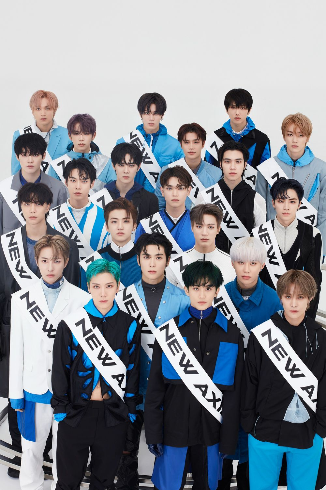

이미지 태그는 inline 속성을 갖는다

 마크 사랑해
마크 사랑해
html 문서에 사용되는 이미지의 포맷은 jpg(jpeg), png가 대표적
jpg: 손실 압축 포맷: 이미지의 해상도가 손상되어도 용량을 많이 줄일 수 있어 가장 많이 사용됨
png: 무손실 압축 포맷: 이미지의 해상도의 손실을 줄이고 투명배경 이미지를 사용할 필요성이 있을 때, 이미지의 용량이 크지만 화질이 뛰어남
이미지 파일들은 파일의 헤더영역에 image/jpeg, image/png 등의 형식을 갖고 있으므로 파일 확장자 명과 관계없이 헤더 정보로 판단함